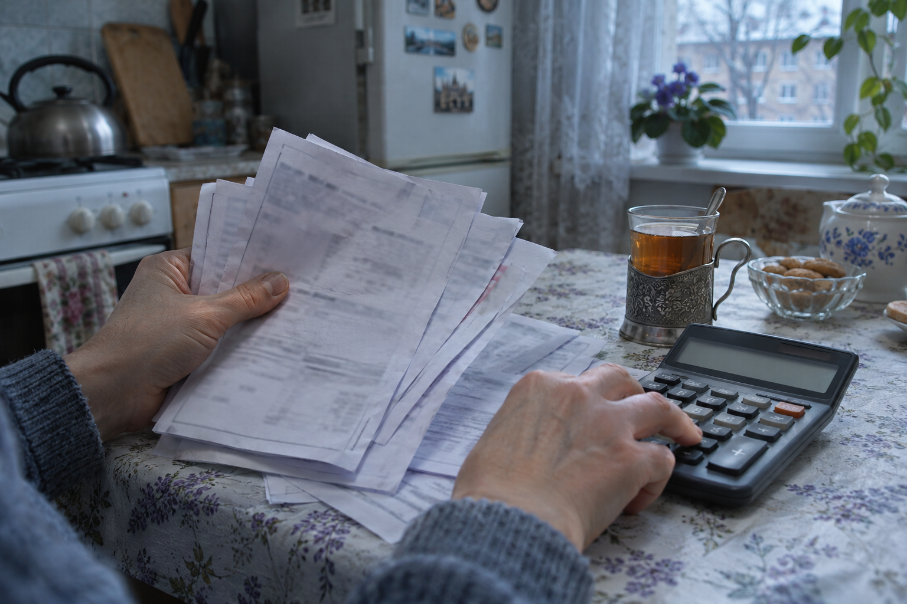
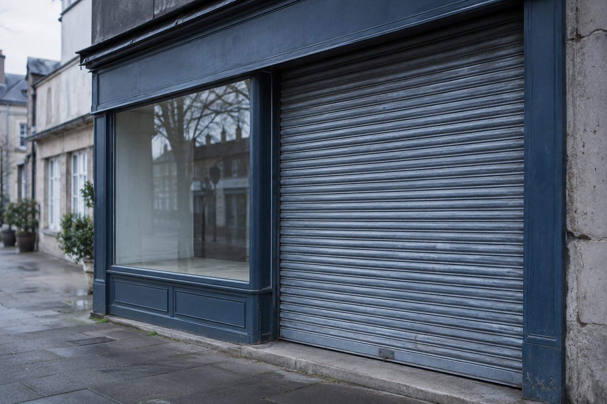

Платежи больше дохода, а долг растёт из‑за процентов и штрафов. Разберу, можно ли его списать

После начала процедуры кредиторы могут требовать долг только через суд, а не звонками вам и родственникам
Банкротство останавливает исполнительные производства. Объясню, как это происходит в вашем случае
Закрытие ИП не снимает долги: они остаются на вас лично. Их можно списать через банкротство

Директор обязан вовремя подать на банкротство, иначе долги могут взыскать с него лично
Кредиторы требуют с вас лично долги компании. Оценю риски и буду защищать вас в суде